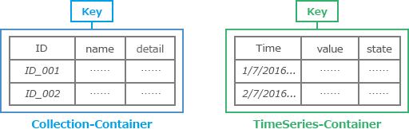
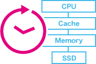
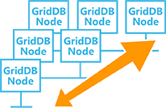
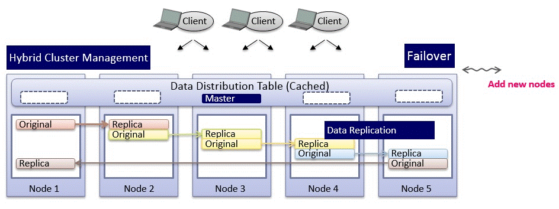

Table of Contents
1.1 What is GridDB?¶
Toshiba GridDB™ is a highly scalable NoSQL database best suited for IoT and Big Data¶
We live in the era of the Internet of Things (IoT) where billions of devices are interconnected and are generating petabytes of data at an increasing rate. Gaining insights and information from that data and generating value out of it gives a tangible competitive advantage to businesses, organizations, governments, and even individuals.
Organizations should focus more on creating value from data that will enhance their core products, services or even operational processes rather than spend time in dealing with the complexity surrounding Big Data. Big data, in this case, means data in large quantities, high frequencies, and vast varieties.
GridDB is an innovative solution built in Toshiba to solve these complex problems. The foundation of GridDB’s principles is based upon offering a versatile data store that is optimized for IoT, provides high scalability, is tuned for high performance, and ensures high reliability.
Four Pillars of GridDB¶
- Optimized for IoT
- High Performance
- High Scalability
- High Reliability/Availability
1. Optimized for IoT¶
GridDB’s Key Container data model and Time Series functions are built for IoT¶
The Key Container data model of GridDB extends the typical NoSQL Key-Value store. The Key Container model represents data in the form of collections that are referenced by keys. The key and container are rough equivalents of the table name and table data in Relational Databases (RDB). Data modeling in GridDB is easier than with other NoSQL databases as we can define the schema and design the data similar to that of an RDB.
The Key Container model allows high speed access to data through Java and C APIs. Data in GridDB is also queried through TQL, a custom SQL-like query language. Basic search through the WHERE command and high speed conditional search operations through indexing offer a great advantage for applications that rely on faster search. GridDB supports transactions, including those with plural records from the application. Transactions in GridDB guarantee ACID (Atomicity, Consistency, Isolation, and Durability) at the container level.
Two types of containers are prominent in GridDB: Collection-Container, a general-purpose container; and TimeSeries-Container which is for managing time series data.

TimeSeries-Container is apt for IoT scenarios where the data is associated with a time-stamp. GridDB supports numerous time-series functions such as
- Data compression, for ever-increasing time series data. This functionality reduces memory usage significantly compared to other DBMS
- Term release, to automatically delete records that are no longer valid or needed
- Time series data aggregation and sampling functions
2. High Performance¶
GridDB’s hybrid composition of In-Memory and Disk architecture is designed for maximum performance¶

I/O is a common bottleneck in any DBMS that can cause the CPU to be under-utilized. GridDB overcomes this bottleneck with the ‘Memory first, Storage second’ structure where the ‘primary’ data that is frequently accessed resides in memory and the rest is passed on to disks (SSD and HDD). High performance is achieved in GridDB by:
Prioritizing In-Memory processing – In scenarios with large amounts of data, GridDB localizes the data access needed by applications by placing as much ‘primary’ data in the same block as possible. Based on the application’s access pattern and frequency GridDB efficiently utilizes memory space by setting hint memory intensity function and thus reduces memory misses.
Reducing the Overhead – Operational and communication overhead occurs in multi-threaded operations due to lock and synchronization. GridDB eliminates this by allocating an exclusive memory and DB file to each CPU core / thread. As a result, execution time gets shortened and better performance is achieved.
Parallel Processing – GridDB achieves high performance through parallel processing within a node and across nodes. Parallel processing across nodes is done by distributing a large dataset among multiple nodes (partitioning). Parallelism is made possible by the event-driven engine which processes multiple requests using the least amount of resources.
3. High Scalability¶
GridDB scales linearly and horizontally on commodity hardware maintaining excellent performance¶

Traditional RDBMS are built on Scale-Up architecture (add more capacity to existing server/node). Transactions and data consistency are excellent on RDBMS. On the other hand, NoSQL databases focus on Scale-Out architecture (add smaller nodes to form a large cluster) but fair poorly on transactions and data consistency.
GridDB scales out horizontally with commodity hardware maintaining the same level of performance. Contrary to other scale-out NoSQL databases, GridDB offers strong data consistency at the container level and provides ACID transaction guarantees similar to that of an RDB. Proprietary algorithms of GridDB allow nodes to be added on the fly online without having to stop the service or operation. GridDB offers a dual advantage for businesses that need a scale-out database for large amounts of data but still want to maintain data consistency.
4. High Reliability/Availability¶
Hybrid cluster management and high fault-tolerant system of GridDB is exceptional for mission-critical applications¶

Network partitions, node failures, and maintaining consistency are some of the major problems that arise when data is distributed across nodes. Typically, distributed systems adopt ‘Master-Slave’ or ‘Peer-to-Peer’ architectures. Master-Slave option is good at maintaining data consistency but a master node redundancy is required to avoid having a Single Point of Failure (SPOF). Peer-to-Peer, though avoids SPOF, has a huge problem of communication overhead among the nodes.
GridDB’s autonomous control cluster architecture integrates the advantages of and overcomes the disadvantages of both Master-Slave and Peer-to-Peer styles. GridDB’s algorithms select the master node automatically among peers, and, in case of master node failure, operations remain intact as a new master is appointed automatically and immediately. GridDB’s proprietary algorithms avoid the classic distributed computing problem of Split-Brain, which occurs due to cluster partition during network failures. GridDB also offers various levels of replication based on the availability requirements of the application.
Overall, GridDB offers multiple reliability features for mission-critical applications that require high availability and data retention.
And finally…
When it comes to IoT and Big Data use-cases, GridDB clearly stands out among other databases in the Relational and NoSQL space. Toshiba’s customers in various industry verticals have successfully implemented IoT projects by harnessing the power of GridDB. For more detailed information on each topic covered above, business use-cases and implementation, benchmark performance results and many more please check the GridDB website www.griddb.org